Mahabana
Antes de la Colonia este territorio se llamaba Mahabana, un nombre ligado al cacique Mahada. Aquí vivían comunidades de la orilla del agua.
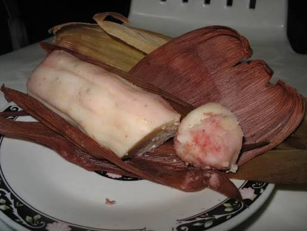
El trío manatienseManatí, Atlántico Mi pedido 0Manatí, Atlántico
Un bollo de angelito recién sacado de la olla, bañado en suero costeño y con su tajada de queso. Así desayunan las matronas, los pescadores del Guájaro y los niños que salen temprano.
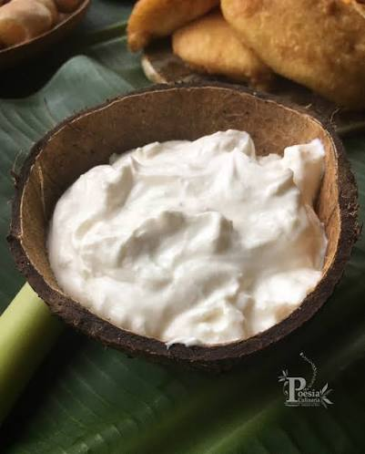
Se baña en suerohasta el centro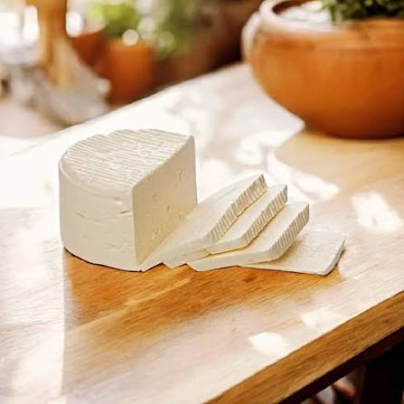
Se suma el quesoen tajadas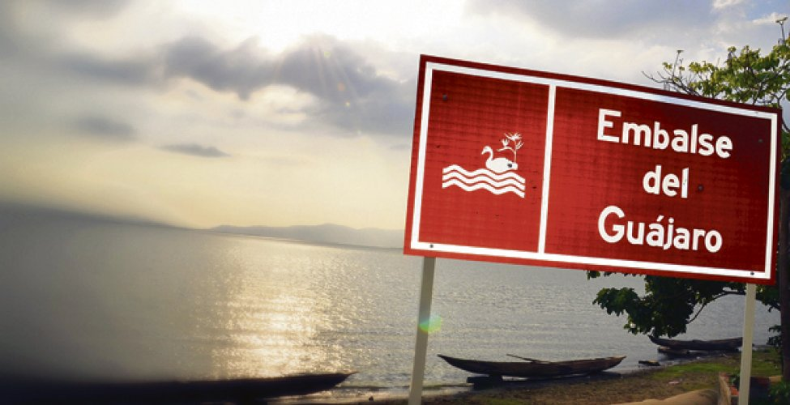
Capítulo 1
Antes de la Colonia este territorio se llamaba Mahabana, un nombre ligado al cacique Mahada. Aquí vivían comunidades de la orilla del agua.
1680
Según la versión más difundida, el capitán español Diego de Rebolledo fundó el pueblo con el nombre de Villa de San Luis Beltrán, en honor al santo misionero.
Cuenta la tradición que unos pescadores encontraron un manatí en la ciénaga que rodeaba el pueblo, y el animal terminó dándole su nombre.
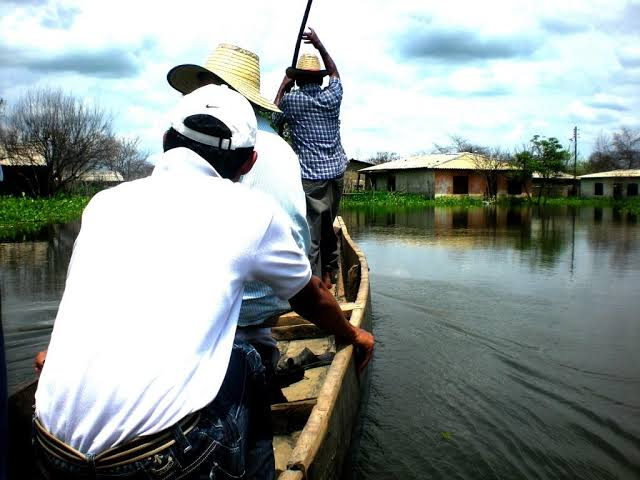
1855
Ese año se volvió municipio. Manatí está en el sur del Atlántico, a 71 km de Barranquilla, entre el embalse del Guájaro y el Canal del Dique. La ciénaga primero y el embalse después dieron el pescado; la tierra dio el maíz y el millo; el ganado dio la leche que se vuelve queso y suero.
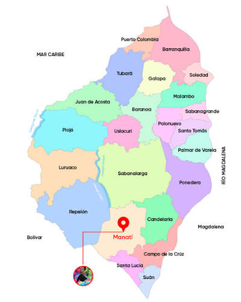
Capítulo 2
El año en Manatí se mide en fiestas: el carnaval en febrero o marzo, San Luis Beltrán el 9 de octubre y las novenas de diciembre. En cada una la ropa cuenta quién eres y la olla grande se vuelve a prender.
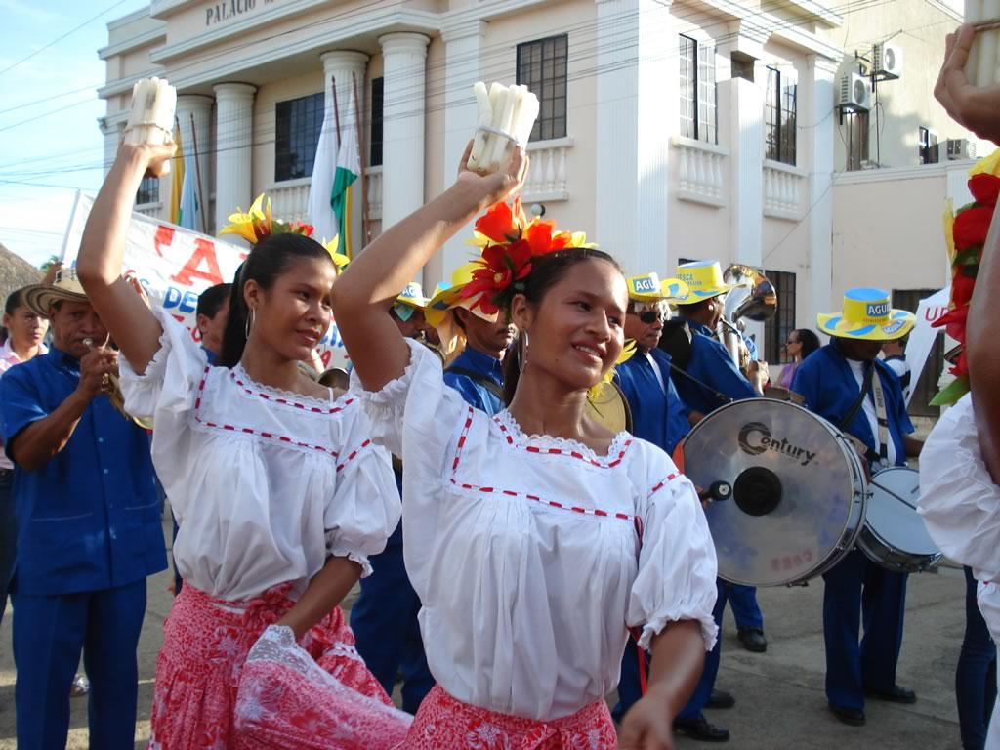
Falda amplia y colorida, blusa clara con encajes y flores en el cabello. Se baila descalza o con abarcas, al ritmo del son de pajarito, la tambora y el bullerengue.
Foto de referencia del Caribe colombiano: Luis Pérez, CC BY 2.0.
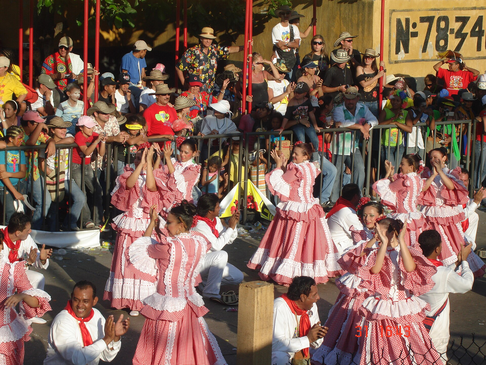
Pantalón y camisa de lino en tonos claros, pañuelo rojo al cuello, sombrero de ala ancha y abarcas. El blanco alivia el calor y acompaña las fiestas patronales.
Foto de referencia: Norma Gómez, CC BY 2.0.
En el carnaval aparece la marimonda, con su costal, corbata y nariz larga, burlándose de todos. A su lado baila la negrita Puloy, con vestido rojo de lunares blancos y turbante.
Y en la cocina la ropa también habla: la matrona se ata el delantal, se cubre el cabello con un pañolón y amarra las hojas del bollo con las manos llenas de maíz.
En Manatí la fiesta no se improvisa: se hereda. Pasa de la cocina al patio y del patio a la tarima.
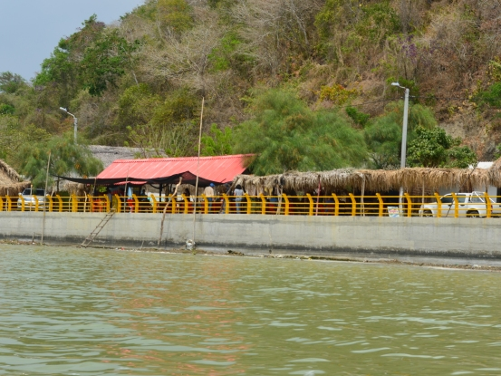
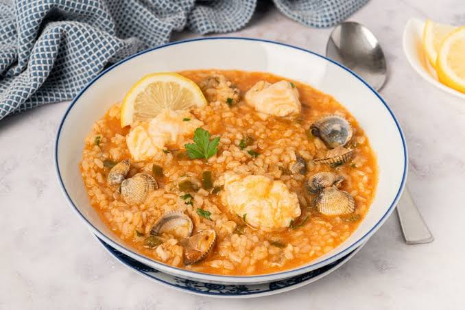
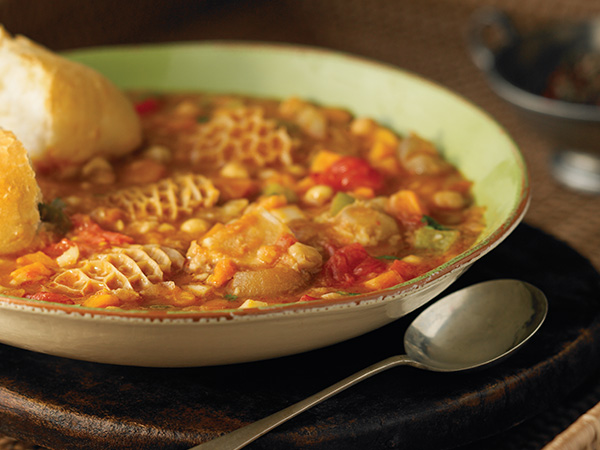
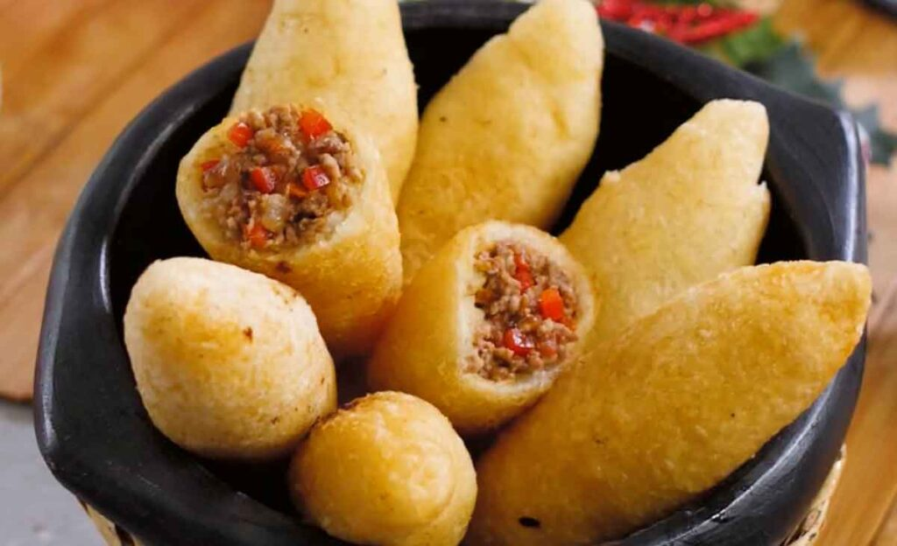
Capítulo 3
Sigue bajando: la comida se acerca.
En muchas casas el día empieza con leña, olla y maíz remojado desde la noche anterior. No hay receta escrita: la medida es el ojo y la enseñanza pasa de abuela a nieta.
Cada fecha trae su olla: fritos en carnaval, pescado en Semana Santa y bollos en las novenas.
Del Guájaro a la olla, sobre todo en Semana Santa.
La sopa de los domingos, que perfuma toda la casa.
Yuca y carne, para las mañanas de feria y carnaval.
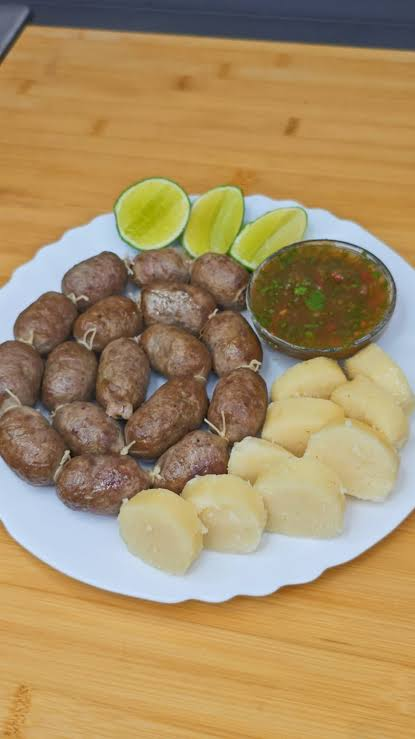
La compañera del chuzo en las noches de fiesta.
El bollo no lleva receta: lleva memoria.
Capítulo 4
Pide el trío completo o cada sabor por separado. Los bollos salen calientes de la olla.